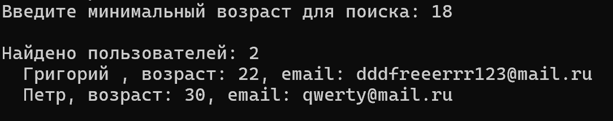

Неделя 1–2 — Настройка инструментов и проектирование
Создан репозиторий на GitHub, освоены базовые команды Git (clone, add, commit, push, checkout). Изучен синтаксис Markdown. Проведён анализ подходов к хранению данных: один общий JSON-файл vs отдельные файлы для каждой записи. Выбрана архитектура «таблица = папка, запись = JSON-файл». Определён интерфейс IEntity с обязательным идентификатором.
Неделя 3–5 — Реализация ядра базы данных
Реализован класс DataBase с методами Save, Load, LoadAll, Delete, DeleteAll. Добавлен метод Find для поиска по предикату. Созданы тестовые модели User и Product. Разработано консольное приложение с интерактивным меню для демонстрации всех операций.

Рис. 1 — Добавление нового объекта в базу данных
Неделя 6–8 — Документирование и веб-сайт
Написана техническая документация в Markdown: исследование предметной области, руководство для начинающих, описание архитектуры. Создан статический веб-сайт на чистом HTML и CSS с нуля. Сайт включает UML-диаграмму классов и схему взаимодействия, свёрстанные без использования изображений. Добавлены скриншоты работы программы. Сформирован итоговый отчёт по проектной практике.